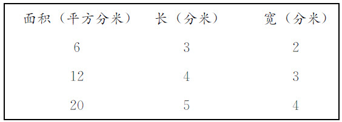
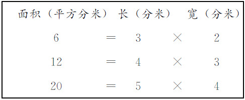
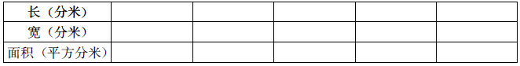
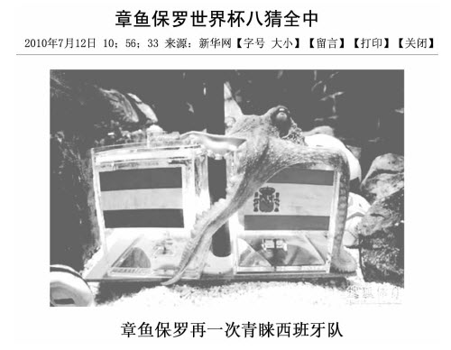
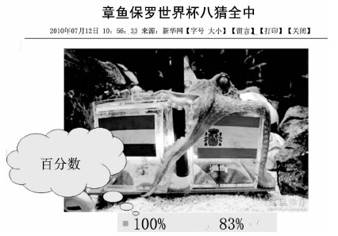
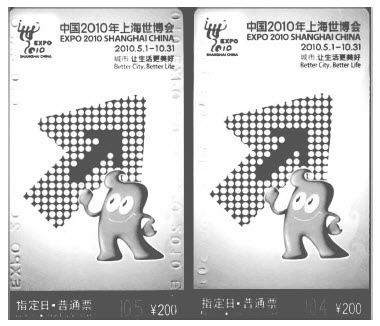
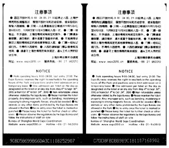
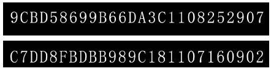
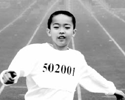

钱守旺
随着课程改革的不断推进，老师们逐渐认识到：教材仅仅是课程的一种重要载体，而不是课程的全部。任何课程实施，都需要利用和开发大量的课程资源。
老师们听完我的课后，都会提出这样的疑问：钱老师，您的课为什么资源总是那么丰富、那么鲜活，您是怎么得到这些资源的？下面就和老师们谈一谈除了教材资源，我是怎样用“数学的眼光”来搜索教学资源的。
当书本上的知识走向生活的时候，知识也会因生活的丰富多彩而更加可亲可爱。数学来源于生活，现实生活中的许多事件或现象都和一定的数学知识相联系。选择贴近学生生活的素材，不仅能唤起学生的生活经验，还能激起学生自主探究的愿望。其实，教师只要留心，生活中处处都是教学资源。
例如，在教学“万以内数的读法”一课时，在上课的前一天，布置调查作业，请学生搜集他们在日常生活中见过的万以内的数。结果第二天汇报时，学生从报纸、杂志、超市广告单等材料中发现了许多万以内的数。在课堂上，组织学生分类读数，取得了非常好的教学效果。
热点问题是全社会普遍关注的问题，它与每个社会成员的利益息息相关，同样对学生也至关重要，更是学生渴望了解和知道的。例如，现在提倡建设节约型社会，在教学“大数的认识”时，就可以把一些由浪费造成的惊人数据展示给学生，让学生在读数的过程中心灵受到触动。
振奋人心的场面往往蕴涵着丰富的教育意义，适当引入这样的场面，往往可以达到“一箭双雕”的效果。例如，刘翔夺冠就是教学“秒的认识”一课的极好素材。我在教学时是这样进行的：
首先，组织学生观看刘翔奥运会夺冠的精彩片段。
北京时间2004年8月28日凌晨2时40分，雅典奥林匹克体育场，这是一个值得所有中国人铭记的日子，中国选手刘翔在男子110米栏决赛中以12秒91的成绩获得金牌！他创造了中国乃至亚洲的历史，成为第一个获得奥运田径短跑项目世界冠军的黄种人。让我们共同回顾这一精彩瞬间吧！
播放刘翔夺冠的视频。然后教师提问：刘翔夺冠用了多长时间？刘翔的速度非常快，用的时间非常短，像这样计量很短的时间，就要用到比分更小的时间单位“秒”。
少年儿童对自身的生长发育充满了好奇，从人体的奇妙变化的话题入手，极易激发学生的探究欲望。例如，在教学几分之一时，从“胎儿图”、“少年图”、“成年图”中头与身体的比例，逐步认识1/2、1/4、1/8。经历分数的形成过程，使学生在认识几分之一的同时，也了解了自己的身体。
《〈基础教育课程改革纲要（试行）〉解读》指出：“课堂教学不应当是一个封闭的系统，也不应拘泥于预先设定的固定不变的程式。预设的目标在实施过程中需要开放地纳入直接经验、弹性灵活的成分以及始料未及的体验，要鼓励师生互动中的即兴创造，超越目标预定的要求。”布鲁姆也说过：“没有预料不到的成果，教学也就不成为一种艺术了。”
学生是活生生的学习的主人，在课堂上学生会提出哪些问题，会怎样回答老师提出的问题，很多情况下老师是无法预料的。学生已有的知识基础、学生的差异、学生的精彩发言、学生提出的问题、学生学习中出现的错误、学生的不同观点等，都是教师可以利用的教学资源。有研究证明：在错误产生的时候，学生头脑中的认知结构是处于“混乱”状态的。如果这时老师采用忽略错误、直接给出标准答案的做法，学生所获取的知识必然是死的、封闭的和支离破碎的。只有开放系统，才能在动态平衡中使系统结构不断处于有序状态，使“混乱”转化成有序。
例如，在教学人教版课标教材三年级上册“数学广角”一课时，我出示了这样一道题目：2004年亚洲杯A组有4个球队参赛，每两个球队都要比赛一场，一共要比赛多少场？结果学生出现了三种答案：有说一共要比赛6场的，有说一共要比赛12场的，有说一共要比赛3场的。针对这种情况，我及时组织学生进行讨论、辩论，课堂气氛一下子活跃起来。学生各抒己见，最后，还是同意一共要比赛6场的同学说服了大家，使这一结果成了全班统一的结论。
教师在捕捉教学资源时应注意以下几点：一是树立正确的资源观念，上课时不能过度依赖既定的教学预案；二是真正了解学生；三是创建平等融洽的师生关系；四是提高教师自身素质，教师要有随时捕捉和利用教学资源的能力。
社区、家庭中有大量与数学教学相关的课程资源，如果我们在教学时能够合理利用，对激发学生的学习兴趣、拓展学生的知识面将大有好处。由于新教材内容大多与生活、生产结合十分紧密，这就要求教师走出课堂和学校，走向社会，走向社区，掌握翔实的材料、确凿的数据。
例如，在教学“利息”一课时，教师课前可以布置学生向家长或者到附近的银行了解有关利息的知识，课上进行汇报。在上课汇报时，学生从课外获得的信息，要远远多于教材中所介绍的知识。这样，学生不仅掌握了书本知识，对由此生发、拓展的生活常识也有了一定程度的了解。
随着社会的发展和人民生活水平的提高，电视、广播、报纸、杂志、计算机已经进入千家万户，学生获取信息的渠道越来越多，知识面也越来越广。当今社会是一个网络化时代、信息化社会，教师可以到网上收集一些与教学相关的题材来充实、丰富课本内容，这是活用教材的新途径。
例如，在教学“路程、时间、速度”一课时，教师播放从电视节目“动物世界”中截取的“猎豹追捕羚羊”片段，在猎豹即将追上羚羊时，画面停止。
教师提问：你们猜，猎豹能抓住羚羊吗？（学生猜测可能发生的情况）
生：我认为猎豹会抓住羚羊，因为猎豹跑得快些。
生：我认为猎豹抓不到羚羊，因为它体力不如羚羊好。
（教师进一步追问）：那什么情况下猎豹会抓住羚羊呢？
生：当猎豹比羚羊跑得快的时候就能抓住羚羊，它跑得比羚羊慢的时候就抓不到羚羊。
教师很自然地说明：这里的快和慢，就是我们数学上所说的速度。从而自然导入新课。学生喜欢的动物世界，紧紧抓住了学生的注意力。
又如，在教学“平移与旋转”一课时，就可以巧妙地运用媒体资源。
随着优美的旋律，老师带领孩子们一起进入游乐园参观，并请孩子们跟随活动的画面，用自己的动作和声音把看到的表演出来。屏幕上展现出各种游乐项目，有激流勇进、波浪飞椅、弹射塔、勇敢者转盘、滑翔索道等。一张张小脸上露出兴奋的表情，同学们时而发出叫喊声，时而高举手臂上下移动，尽情地表演着。
录像一停，老师开始与学生交流。
师：刚才我们看到这么多的游乐项目，能按它们不同的运动方式分分类吗？
生：激流勇进是直直地下冲的，可以叫它下滑类。
生：我认为观缆车、波浪飞椅、勇敢者转盘可以分为一类，因为它们是旋转的。
师：（紧接着）其他的呢？
生：弹射塔是向上弹射的，滑翔索道是往下滑的，它们和激流勇进可以归为一类。
师：刚才你们看到了不同的运动方式，像这样的——（用手势表示旋转的动作）你们能给它起个名字吗？
生：（异口同声）叫旋转。
（教师又接着用手势做出平移的动作问）像这样呢？
生：（几个学生小声说）可以叫平移。
师：（抓住时机）好，就用你们说的来命名。
（教师边说边板书：旋转、平移）
教师带领学生回顾生活，同学们在观察中发现了游乐园里的平移与旋转现象，体会到数学就在身边。
广大的农村地区资源没有城市丰富，但是也要认识到农村有得天独厚的优势。农村的资源是具体的、真实的，跟学生的实际联系也是紧密的。例如，学生生活的环境就是一个宝贵的资源库，教师可以依托周边环境进行教学资源的开发，如可以从学校资源、生活资源、社会资源入手开发课程资源。
例如，植树问题的教学、统计知识的教学、正比例的教学等，都可以结合校园里的树木进行教学。教师还可以开发教室的墙壁资源，如低年级可以把学过的数字贴在墙上，高年级可以把100以内的质数表贴在墙上，把学生学习过程中的一些典型错误贴在墙上。这样可以提高这些资源与学生的“见面率”，给学生提供对这些知识的再认机会，以降低知识的遗忘率。
数学课程资源的开发要注意整合其他学科资源，其表现为：从其他学科中挖掘可以利用的资源来创设情境，帮助学生理解数学概念、掌握数学知识。
例如，在教学“等量代换”一课时，我就利用了学生在语文课上学到的《曹冲称象》的故事。一上课，我先出示曹冲称象的图片，问：“看到这幅图片，同学们是不是想起了一个著名的历史故事？”学生几乎异口同声地说：“曹冲称象！”我趁热打铁：“还记得曹冲是怎样称象的吗？”
我结合课件的演示，让学生回忆曹冲称象的过程：先把大象赶到一艘大船上，看船身下沉多少，就沿着水面在船舷上画一条线；再把大象赶上岸，往船上装石头，一直装到船下沉到画线的地方为止；然后称一称船上的石头有多重，就知道大象有多重了。
之后我说明：如果我们从数学的角度看，这里曹冲运用了一种重要的数学思考方法——等量代换。这节课，我们就来学习如何用“等量代换”的方法解决问题。
又如，在教学“可能与一定”时，我就巧妙地利用了一个小故事导入新课。
师：这节数学课，我们研究“可能与一定”。老师先给大家讲个故事。很久很久以前，在一个古老王国的监狱里关着一位犯人，这个犯人即将被执行死刑。这个国家有一条非常有趣的法律规定：在每个犯人被执行死刑之前，都会给他一次机会，让他抽签来决定自己的命运，在装签的盒子里有两张纸条，一张写着“生”，一张写着“死”，请小朋友们猜猜他可能摸到哪一张。
生：摸到“生”。
生：摸到“死”。
师：是啊！犯人摸到“生”就被释放，摸到“死”就被杀头，这两种可能性都有。但是很可惜，这个犯人有一个仇人，这个仇人想要他死掉，于是偷偷地把“生”这张纸条换成了“死”，结果两张纸条上都写着“死”。那么，犯人不管摸到哪一张，他的死是“可能”还是“一定”？
生：“一定”是“死”。
师：但是他没有把纸条打开，而是一下子把纸条吞到肚子里。因为剩下的那张纸条上写着“死”，所以法官推断，犯人吃下的纸条上面写的一定是“生”。于是犯人当场被释放。
有趣的小故事，符合低年级学生的心理特点。这个小故事与普通的儿童故事不同，它不仅以极强的趣味性吸引了学生，而且其中包含了明确的数学教学内容——事物的不确定性和特定条件下的确定性，使学生从故事中悟出数学道理。
再如，在教学“循环小数”一课时，可以利用音乐节拍，很自然地导入新课。
师：（板书│×××│）这个节奏你们能拍出来吗？（学生一起拍掌）
师：（中断后）你们拍的节奏为什么这么整齐？
生：我们都是按照先拍一下、后拍两下这样相同的节奏拍的。
师：如果老师让你们按照这样的节奏，不断重复地一直拍下去，不叫停，想一想，你们要拍多少次？
生：要拍很多很多次。
生：要拍无数次。
师：像这样拍的次数是“有限的”还是“无限的”？
生：是无限的。
在这里，老师巧妙地利用了音乐课中的节拍导入新课，直观形象，引人入胜，使学生一下子就进入了学习的境地，也使学生初步感知了“循环”、“无限”等概念。
［片段写真］比的意义导入
师：老师先问同学们一个问题，你们班是男生多还是女生多？男生有多少人？女生有多少人？
生：我们班男生多，女生少。男生有28人，女生有23人。（学生回答时教师板书男女生人数）
师：男多女少这种现象从全国来看也非常明显，甚至达到了男女比例失调的状态。
（教师在大屏幕上出示：据国家人口计生委介绍，我国出生婴儿性别比是100∶117，即平均每出生100名女婴相应地出生117名男婴）
（接下来，教师在大屏幕上再次展示两幅画面，在画面中突出以下数据）（1）海南省新生儿男女比例为135∶100。
（2）我国于2000年进行的第五次全国人口普查显示：在新生的婴儿中，男女人数比为119.2∶100。
（3）男女比例失调，十年后我国将会有数千万光棍汉！
（4）3000万光棍之争：中国人口性别比例将严重失调。
师：刚才我们提到的135∶100、119.2∶100都是比，关于比你们想知道些什么？
生：我想知道什么叫做比。
生：我想知道比的各部分名称。
生：我想知道学了比有什么用处。
师：比表示的是两个数之间的一种关系，这节课我们就来学习比的意义。（板书课题：比的意义）
［片段写真］长方形和正方形面积教学
下面是我在广西桂林上课的课堂实录：
（课前游戏：考考你的观察力。教师出示两幅图片让学生观察，说一说自己看到了什么）
1.观察发现
师：人们都说“桂林山水甲天下”，这话一点不假！这次钱老师到桂林来，亲眼目睹了桂林的山、桂林的水，我觉得比文人描写的还要美！你们看，钱老师一到桂林，就迫不及待地在象鼻山照了一张相。（出示自己前一天在象鼻山的照片）
师：（在大屏幕上播放6幅桂林山水的图片，一边播放一边富有感情地描述）你们看，桂林的山加上桂林的水，再加上水中那静静的倒影，简直就是大自然创作的一幅幅精美的图画。
（学生欣赏老师出示的几幅桂林山水的图片，被老师富有感情的描述吸引，个个脸上露出自豪的表情）
师：桂林的美景激发起了钱老师创作的欲望，老师也创作了三幅画。（出示第一幅面积是6平方分米的画）你们看老师画得怎么样？
生：（异口同声）很好！
师：谢谢同学们的夸奖！既然今天是数学课，那老师就提个数学问题。你们大胆地估计一下，这幅画的面积可能是多少？
生：我认为可能是4平方分米。
生：我认为可能是8平方分米。
生：我认为可能是6平方分米。
师：到底是多少平方分米呢？（把这幅画的背面展示给学生，画的背面画有许多面积是1平方分米的小方格）你们数一数，这幅画的面积是多少？
生：6平方分米。
（教师接着出示面积是12平方分米和20平方分米的画，让学生估计每幅画的面积。教学过程同上。）
师：同学们看，刚才三幅画的面积，有的大有的小，凭你们的经验，请你大胆地猜测一下，长方形的面积可能与它的什么有关系？
生：我认为长方形的面积和它的周长有关系。
生：我认为长方形的面积和它的长有关系。
生：我认为长方形的面积和它的宽有关系。
（学生回答后，老师结合课件的动态演示，让学生确信长方形面积的大小与它的长和宽有关系）
（教师结合课件演示，启发学生思考：长方形的宽不变，长发生变化，它的面积怎么变化？长方形的长不变，宽发生变化，它的面积怎么变化？长方形的长和宽都发生变化，它的面积怎么变化？）
（教师在大屏幕上出示：长方形的面积与它的长和宽有关系）
2.自主探究
师：长方形的面积与它的长和宽到底有什么关系呢？
（教师引导学生观察刚才出示的三幅画的长和宽：第一幅画的长是3分米，宽是2分米；第二幅画的长是4分米，宽是3分米；第三幅画的长是5分米，宽是4分米）
（至此，黑板上形成下面的板书）

师：同学们观察前面的板书，能发现什么？
生：我发现用长方形的长乘以宽正好等于它的面积。您看，3×2＝6，4×3＝12，5×4＝20。
生：（兴奋地）老师，我也发现了这个规律！
师：其他同学有没有发现？
生：（异口同声）发现了！
（教师把板书补充完整，形成下面的板书）

师：其他长方形的面积是不是也可以用“长×宽”来计算呢？请同学们以小组为单位进一步验证。
教师让学生任取几个1平方分米的正方形，拼成不同的长方形。边操作，边填表。

学生以小组为单位操作后，组织汇报；教师板书面积、长、宽的数据。
启发学生思考：你发现其他长方形的面积与它的长和宽有什么关系？
引导学生得出：长方形的面积＝长×宽。
教师追问：在面积公式中，长×宽实际上表示的是什么？
教师通过课件的动态演示，使学生直观地看到：长是几厘米，沿着长边就可以摆几个面积是1平方厘米的小正方形；宽是几厘米，就可以摆这样的几排。
由此使学生理解：长×宽实际上表示的是长方形中所包含的面积单位的个数。
对于正方形的面积公式的得出，教师采用了下面的方式：
教师通过课件出示下面几个图形，让学生计算每个图形的面积。
长9米，宽8米；长8米，宽7米；长7米，宽6米；长6米，宽6米（实际上是边长为6米的正方形）。
教师通过课件演示，将长方形逐渐变成正方形。
提问：要求正方形的面积，该怎样计算呢？
引导学生由长方形的面积公式推出：正方形的面积＝边长×边长。
课堂智慧
可以这样巧用课程资源
——以两个课堂教学片段为例
（教师播放南非世界杯精彩进球集锦，并出示从网上找到的图片，如下图所示）

师：2010年足球世界杯，章鱼保罗预测比赛结果，8次全中，预测成功率为100%。（课件呈现比赛结果，如下）小组赛首战预测德国胜澳大利亚结果：德国4∶0胜
小组赛次战预测德国负塞尔维亚结果：德国0∶1负
小组赛末战预测德国胜加纳结果：德国1∶0胜
1/8决赛预测德国胜英格兰结果：德国4∶1胜
1/4决赛预测德国胜阿根廷结果：德国4∶0胜
半决赛预测德国负西班牙结果：德国0∶1负
三四名决赛预测德国胜乌拉圭结果：德国3∶2胜
决赛预测西班牙胜荷兰结果：西班牙1∶0胜
师：章鱼保罗不仅2010年世界杯预测准确率极高，2008年欧洲杯预测输赢的结果也令人惊叹。2008年欧洲杯，它预测6次有5次准确，预测成功率为83%。（课件呈现比赛结果，如下）小组赛首战预测德国胜波兰结果：德国2∶0胜
小组赛次战预测德国负克罗地亚结果：德国1∶2负
小组赛末战预测德国胜奥地利结果：德国1∶0胜
1/4决赛预测德国胜葡萄牙结果：德国3∶2胜
半决赛预测德国胜土耳其结果：德国3∶2胜
决赛预测德国胜西班牙结果：德国0∶1负
师：请看大屏幕上（如下图）。随着这两个数的出现，我们今天的数学课也就此开始了。
师：大屏幕上的这两个数（指100%和83%），你们认识吗？
生：认识，这些数是百分数。
师：对！这些数就是我们今天要认识的百分数。

师：这两个数你们会读吗？
生：第一个数读做“百分之一百”，第二个数读做“百分之八十三”。
师：百分数怎么写呢？看老师给你们写一遍。（示范如何写83%，并介绍百分号及书写百分号时应注意的问题）
师：谁能说一说，在生活中你在哪儿见过百分数？
生：我在喝汇源果汁时见过百分数。
生：我在喝牛奶时见过百分数。
生：我在衣服的标签上见过百分数。
生：老师在期末考试计算及格率和优秀率时用过百分数。
生：老师，我在安装电脑游戏时用过百分数。
师：看来，生活中的百分数还真不少。老师课前也搜集了一些百分数，我们一起来看一看。（展示自己课前搜集的百分数，有的是网页中的信息，有的是报纸中的信息，有的是电视中的信息，有的是商品标签中的信息，有的是用杀毒软件为移动硬盘杀毒的信息）
千龙网：高考报名人数减少，今年高考录取率将逼近80%。
新京报：北京新房房价上涨17.8%。
深圳晚报：深圳房价下降10.8%，创全国最大跌幅。
新浪财经：上海房价7月下降24%，创三年最大跌幅。
中国教育报：5年来全国教育投入平均增长16.1%。
新京报：第二套房贷款首付不得低于40%。
中国新闻网：受金融危机冲击，全球银行业总薪酬平均缩水55%。
羊毛衫标签上的信息：100%纯羊毛。
瑞星杀毒软件为移动硬盘杀毒的视频：由0到100%的杀毒过程。
师：百分数又叫做百分比或百分率。看了这么多的百分数，你们想说点什么？
生：我觉得百分数在生活中的应用非常普遍。
生：百分数随处可见，说明人们的生活离不开百分数。
生：用百分数交流起来非常方便。
（1）上海世博会资料
（教师播放有关上海世博会的视频，在视频中呈现以下信息）
6个月184天。
190个国家、56个国际组织以及中外企业踊跃参展。
200多万志愿者无私奉献，7308万参观者流连忘返。
环卫工人每天凌晨4点开始工作。
安保人员每小时约360次微笑问候。
志愿者每天约500次解答询问。
7.6万名外国工作人员辛勤付出。
师：简单的一组数据形象地刻画出了上海世博会工作人员的辛勤付出和所取得的巨大成功。
（2）由世博会门票引出“编码”

（教师出示两张上海世博会门票，如下图所示）师：这两张门票有什么不同？
生：这两张门票一张是10月4日的，一张是10月5日的。
（教师出示这两张门票，引导学生看背面，如下图所示）

师：怎么知道这是两张不同的世博会门票？
生：门票上的编码不同。

（3）揭示课题：数字的用处（略）
（1）学生汇报课前调查的结果
生：我通过课前调查，发现生活中有很多编码。我家的门牌号是8—15A，我家的车牌号是×××。
生：我家的电话号码是8886××××。
生：我看了爷爷、奶奶、爸爸、妈妈的身份证，知道了他们的身份证号码都是18位。
生：我昨天跟妈妈到商场买衣服，发现衣服的标签上有条形码，付款时阿姨只要用一个东西照一下，就知道这件衣服多少钱了。
生：现在超市都是这样的，我妈妈就在家乐福工作。她们结账时都是扫条形码，这样非常方便。
生：老师，我爸爸是北京人，妈妈是湖北人，我发现他们的身份证号码前几位不一样。
……
（2）质疑问难
师：对于数字编码，你们还有什么问题吗？
生：老师，我想知道这些编码是怎样编出来的。
生：妈妈告诉我，身份证号码属于个人隐私，不能随便告诉别人。身份证号码真的有这么重要吗？
生：老师，我的身份证号码和很多人的不一样，最后一位不是数字，而是一个X，这是怎么回事？
生：老师，为什么身份证号码是18位，如果位数再少一点，可以吗？
生：老师，车牌号是怎么编出来的？
生：老师，我想知道为什么超市一扫条形码就可以知道商品的价钱，这是什么原理？
……
（3）学生试着给运动员编号码
师：如果502001表示五年级2班1号同学，请试着为下面这些同学编一个运动员号码：
六年级1班8号同学
五年级4班3号同学
四年级8班3号同学
三年级2班6号同学
二年级5班15号同学
一年级9班9号同学

（4）创编学号，初步感受数字编码的准确性、简洁性
师：我们班每个同学都有学号，你的学号是多少？你呢？（10号就代表你）5号同学请举手，你叫×××。
师：如果在年级集会时叫5号，叫的一定是×××吗？为什么？要想保证叫的一定是你，怎么办？（请两个人说）请你把这个编号写出来。
（第一次写编号）
（分类挑几个编号）
［文字：六（14）12号，六（14）8号，请学生读出来，并说出表达的意思］
（数字：1425、143，你能看懂吗？请你先读这个编号，再说一说它表达了什么信息）
师：怎样给1班5号同学写编号？“0”起到什么作用？
师：（小结）班号与学号都用两位数表示，看来数量的多少决定了编号的位数。如果位数不够，就用0占位。
师：请修改一下你的编号。（第二次写编号）
师：61425，你读懂了什么信息？（找两个人说）
师：它是表示今年的六年级14班25号同学，还是表示去年的六年级14班25号同学呢？如何能更准确地表达这一届的六年级14班25号同学呢？请按小组讨论。
（小组讨论：入学年份、毕业年份）
师：把你的编号写完整。（第三次写编号）
师：请你先读出编号，然后连贯地说一下编号所表达的信息。
生：2005年入学的14班25号同学，2011届14班25号同学。
师：20111425这个编号一定代表你吗？（增加学校代码）
师：人大附小的代码是259，在编号前面再加上259就一定代表你了。
师：刚才我们经历的过程就是利用数字进行编码的过程。